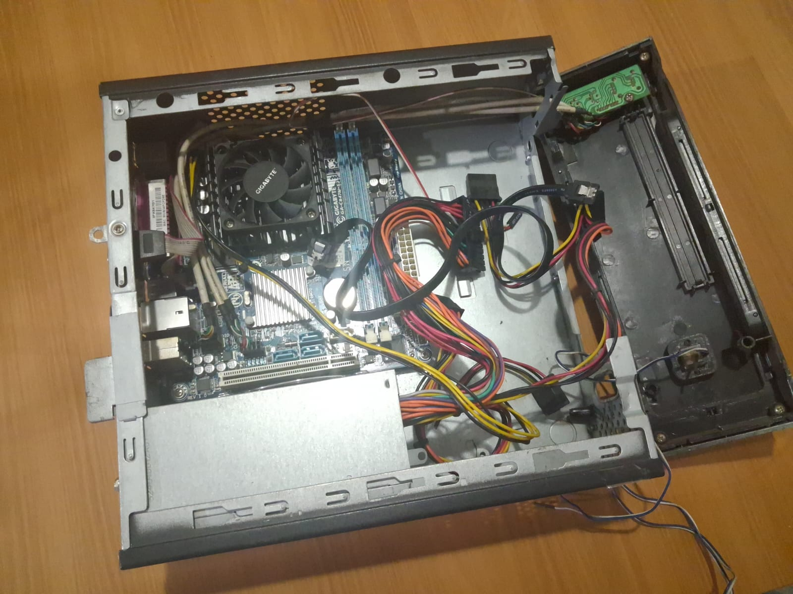
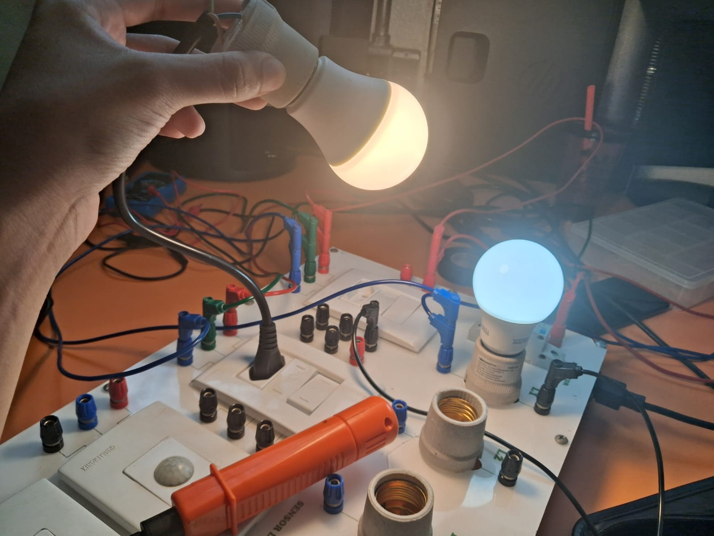
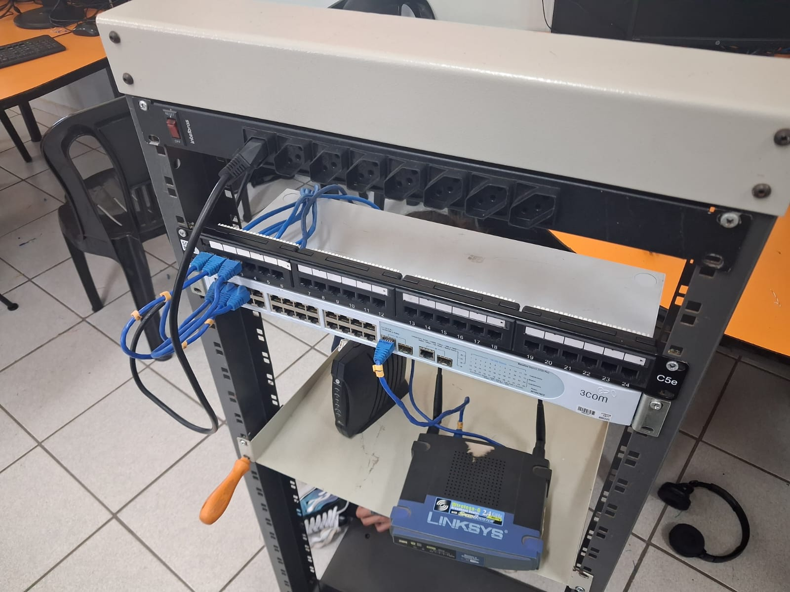
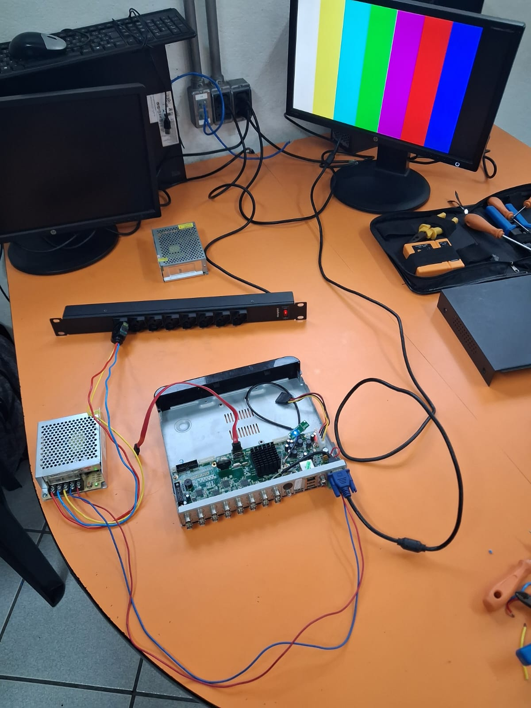

Redes e cabeamento
Visita técnica, layout, projeto elétrico e lista de materiais para uma rede organizada e segura.
CONSULTORIA · Levantamento dos requisitos.PROJETOS E SERVIÇOS / DA VISÃO À ENTREGA
Repertório para imaginar. Método para realizar. Conheça nossos estudos e as frentes em que podemos construir com você.
01 / NOSSOS SERVIÇOS
Cada serviço tem uma etapa de consultoria e uma de execução. O orçamento sai do levantamento, sem surpresas.
Visita técnica, layout, projeto elétrico e lista de materiais para uma rede organizada e segura.
CONSULTORIA · Levantamento dos requisitos.Levantamento do ambiente, layout de cobertura das câmeras e proposta com equipamentos e serviços.
CONSULTORIA · Visita técnica e requisitos.Análise da demanda, pesquisa das melhores soluções do mercado e proposta de implantação.
CONSULTORIA · Pesquisa de soluções.Dimensionamento, adequação às normas de segurança e verificação de instalações com instrumentos de medição.
CONSULTORIA · Dimensionamento e segurança.Montagem, manutenção, verificação e testes de equipamentos, com inventário organizado.
CONSULTORIA · Dimensionamento e orçamento.Aquisição de sistemas operacionais e aplicativos, suporte e configuração de ambientes em rede com segurança.
CONSULTORIA · Escolha de soluções adequadas.02 / NA PRÁTICA

Verificação de componentes, testes e diagnóstico de falhas.

Testes de circuitos com multímetro e instrumentos de medição.

Rack, patch panel e cabeamento padronizados.

Configuração do gravador e validação da imagem das câmeras.
03 / INFRAESTRUTURA CLOUD
Servidores lentos, falta de segurança no acesso e dificuldade em escalar recursos comprometem o desempenho e a estabilidade das aplicações web.
Provisionamento, acesso seguro e configuração de instâncias AWS EC2 via terminal Linux. O foco é garantir aplicações estáveis, seguras e prontas para crescer.
04 / DO CAOS À ORGANIZAÇÃO

Cabos soltos, falta de identificação e risco de falhas. É o que encontramos na visita técnica.


Rack, patch panel e cabeamento padronizados, com mais segurança, manutenção simples e espaço para crescer.
05 / PROJETO E DOCUMENTAÇÃO
Da ideia ao desenho técnico, cada etapa é documentada para dar clareza às decisões.


06 / FORMATOS DE PARCERIA
Escopo, prazo e valores são combinados no primeiro contato e detalhados no orçamento.
Visita técnica, layout, orçamento e execução, com testes e entrega técnica.
Apenas o projeto, apenas a instalação ou apenas a manutenção.
Levantamento, layout e lista de materiais para você decidir como executar.
PRÓXIMO MOVIMENTO